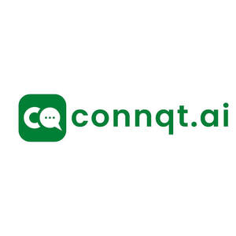

Trade Mark Journal No.2025/046 14 November 2025
UK00004287736 1 November 2025 (9,38,42)

- Class 9
- Computer software; Computer software for communication management, customer engagement, chatbots, and instant messaging; mobile applications for business messaging, customer relationship management, and marketing automation; artificial intelligence software for automated responses, conversational analytics, and natural language processing; software for integrating third-party software applications with messaging platforms. .
- Class 38
- Communication Services; Providing access to online platforms for instant messaging and real-time communication; electronic transmission of messages, data, and information via global communication networks; providing telecommunication connections to messaging platforms, chatbots, and communication software; providing access to cloud-based messaging and communication networks. .
- Class 42
- SaaS / Cloud Computing Services/ AI Services; Software as a service (SaaS) for business communication, messaging, and customer engagement; platform as a service (PaaS) featuring artificial intelligence software for chatbots and conversational automation; providing temporary use of cloud-based software for business processes such as customer support, lead generation, marketing, reservations, feedback and recruitment; integration services for communication platforms and third-party software applications. .
Connqt.ai Limited